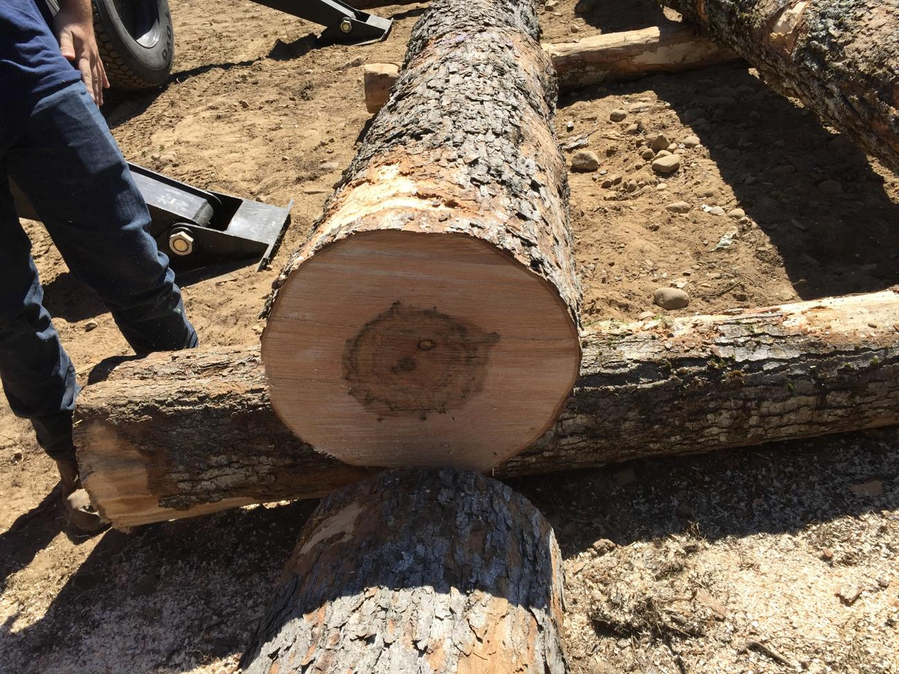
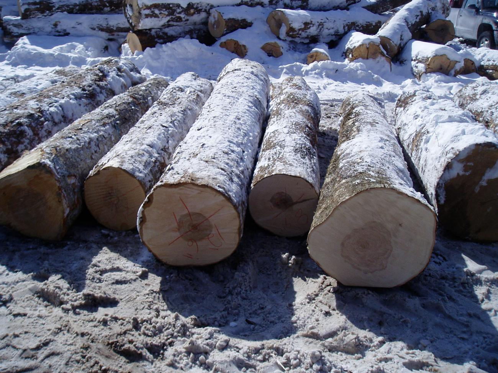
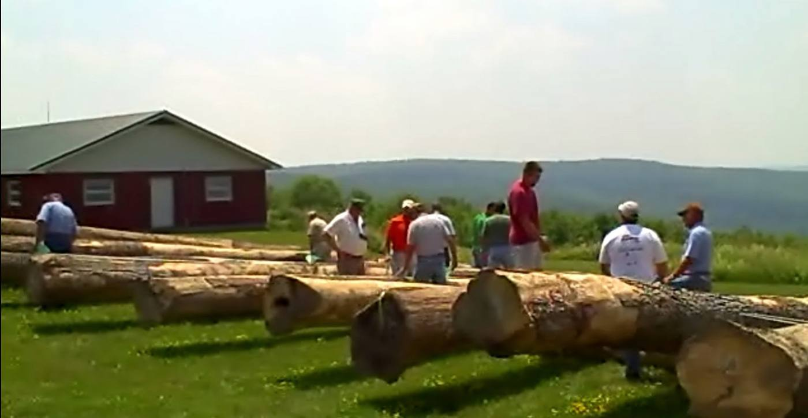

World’s best hardwood log bucker training app
Buck tree-length stems, grade the logs, and chase the highest-value pattern the optimizer can find — across eleven hardwood species and the markets you set.
SumBuck turns real bucking and grading decisions into hands-on hardwood log bucking training you can repeat as many times as it takes — no log deck, no daylight, no wasted wood.
Place your cuts along a full tree-length stem, then score your pattern against the highest-value solution the optimizer finds under the current specs and prices.
Work through curated instruction stems, each built to teach a specific lesson about length, diameter, sweep, heart, and where the value really sits.
Call the grade on pre-cut logs — from slicer veneer down to scrag — with product-specific defect feedback, and keep score as you go.

A stem is more than length. SumBuck trains the eye to read small-end diameter, heartwood, sweep, face quality, and visible defects — the same things that decide whether a log makes veneer, a prime sawlog, or scrag.
Marked log ends in the yard are where careers are made or lost. SumBuck’s Grade mode drills the full product ladder — slicer and rotary veneer, prime and select sawlogs, #1 through #3, and scrag — against real species standards.

The free edition is robust and complete — it works just fine for forestry workshops, vo-tech forestry and natural resources programs, college forestry instruction, sawmill training, logger training, and everyday practice. When you need it branded and built out, the custom edition is ready.
Robust enough for real training — not a stripped-down demo.
Branded and built out for your region, organization, or event.
Custom builds, regional branding, and single-workshop editions — contact Steve Bick for pricing and options.

SumBuck comes out of a long association with hardwood log bucker training. Dr. Bick served as program manager for the US Forest Service’s Hardwood Value Improvement Project and the Hardwood Utilization Project that succeeded it.
Over the years he has put on, assisted with, and supported hardwood bucker training sessions throughout the 35-state hardwood region. He saw the need for a modern, up-to-date virtual log-bucking trainer — and SumBuck is the result.
— Steve Bick, Northeast Forests · Lumbermen OS
Start bucking and grading in your browser right now — the free edition is ready for wood utilization training, classroom use, workshops, and individual practice.